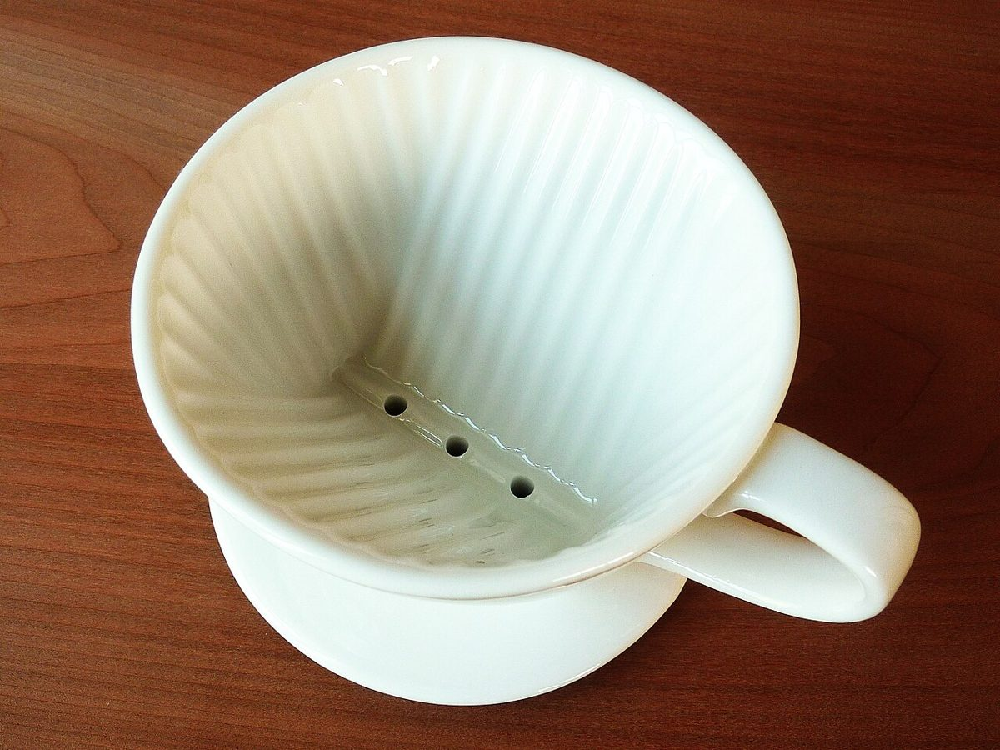
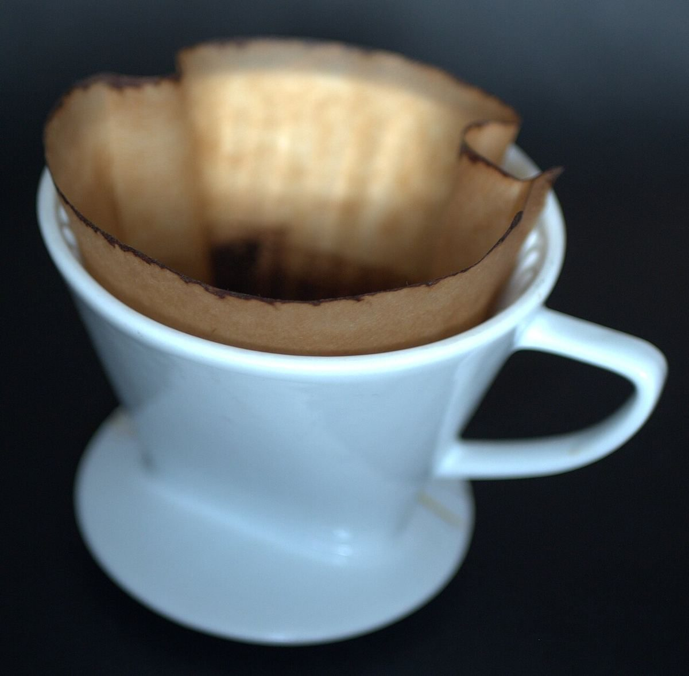

カフェ / 〒396-0026 長野県伊那市
リヤコーヒー
長野県伊那市にあるカフェ「リヤコーヒー」のご案内ページです。営業時間やメニューなど、詳しいことは準備中。まずはInstagramをのぞいてみてください。

制作側の連想
「リヤ」から、バックミラーの小窓を思いついた
店名の由来は分かりません。制作側は「リヤ」という響きから、車の後ろ側(rear)と、後ろを映す小さなミラーを連想しました。そこでこのサイトは、ミラーの小窓に写真をひとつずつ映していく作りにしています。制作側の連想で、お店の理念・由来とは無関係です。
写真は、お店の商品ではないフリー素材のイメージです。珈琲まわりの道具や質感のクローズアップを選びました。
ミラーに映る三つ
後ろを振り返る、M2・M3・M4。

